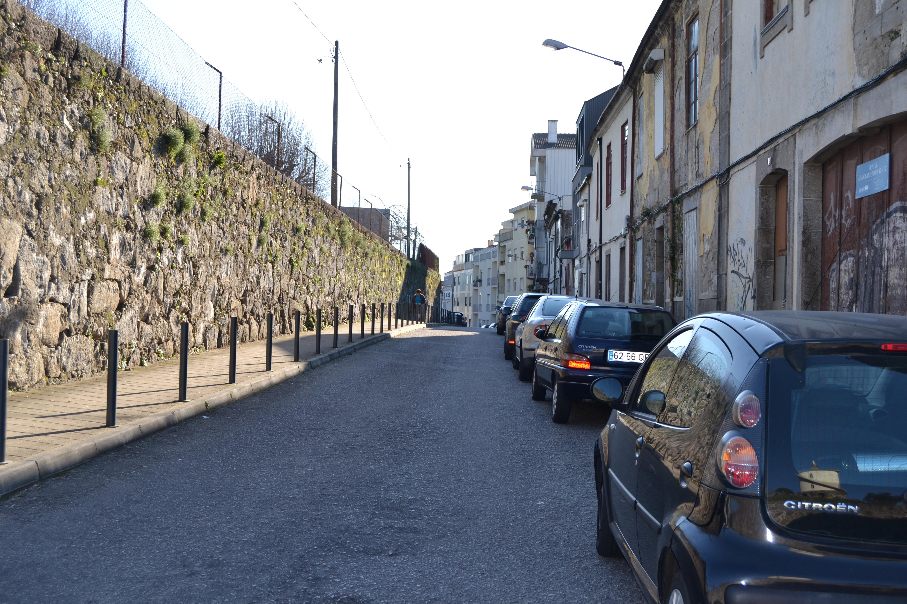
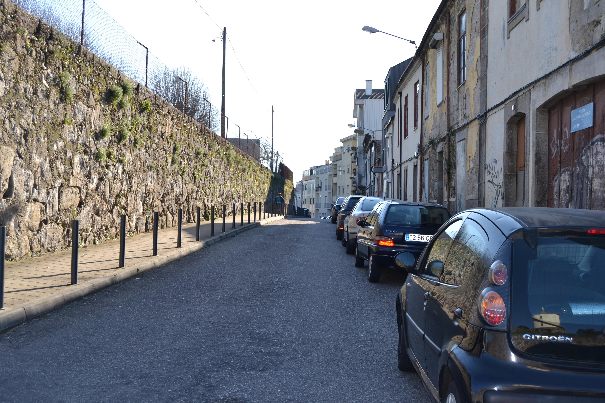

Rua em Frente de Nossa Senhora de Guadalupe
Imagens antigas:


Imagens atuais:
 

Descrição:
Troço da Cangosta de Guadalupe, situado em frente à capela do mesmo nome. Cangosta de Guadalupe, situado em frente à capela do mesmo nome.
Parcialmente construído em 1725, tinha, 25 anos mais tarde, ainda 3 «chãos». Um significativo espaço era ocupado por um grande quintal e pela fachada lateral de uma casa da rua de Nossa Senhora de Guadalupe, o que mostra bem a subalternização total desta rua. 1725, tinha, 25 anos mais tarde, ainda 3 «chãos». Um significativo espaço era ocupado por um grande quintal e pela fachada lateral de uma casa da rua de Nossa Senhora de Guadalupe, o que mostra bem a subalternização total desta rua.
As 5 casas construídas eram extremamente simples e tinham as janelas vazadas. Todos esses prédios estavam emprazados ao Cabido. Cabido.
Chama-se actualmente rua de Guadalupe. rua de Guadalupe.
Pequena artéria, mais parecida com uma cangosta, ligava a igreja de S. Vicente com a capela de Guadalupe. igreja de S. Vicente com a capela de Guadalupe.
Rua de arrabalde, na vertente Noroeste do então chamado monte de Santa Margarida, tinha do lado Norte — o único representado no Mappa, onze habitações de um piso e duas de dois. Essas casas eram muito simples, do tipo com porta ladeada de janela. No extremo Este está uma casa de pedra, de dois pisos, bem definida por fortes pilastras, que tem a ladeá-la um bonito, mas singelo, portão de pedra. Rua de arrabalde, na vertente Noroeste do então chamado monte de Santa Margarida, tinha do lado Norte — o único representado no Mappa, onze habitações de um piso e duas de dois. Essas casas eram muito simples, do tipo com porta ladeada de janela. No extremo Este está uma casa de pedra, de dois pisos, bem definida por fortes pilastras, que tem a ladeá-la um bonito, mas singelo, portão de pedra.
Na década de 60 do séc. XVIII, a rua sofreu uma alteração de traçado - que é o que actualmente se vê - devido à construção, neste local, do convento e capela das Teresinhas, facto que motivou a amortização dos prazos 1 a 8. Na década de 60 do séc. XVIII, a rua sofreu uma alteração de traçado - que é o que actualmente se vê - devido à construção, neste local, do convento e capela das Teresinhas, facto que motivou a amortização dos prazos 1 a 8.
Das 13 casas representadas no Mappa, 9 eram foreiras do cabido. cabido.
Desde 5 de Junho de 1880 passou, oficialmente, a chamar-se rua de Camões. 5 de Junho de 1880 passou, oficialmente, a chamar-se rua de Camões.
Lista das casas
-
Número 1 Enfiteuta Vid. casa n.º9 da rua de N. Sr.ª de Guadalupe. Foro ??? Descrição Pertence à casa n.° 17 da Rua de N. Sra. de Guadalupe, para onde tem frontaria e serventia principais. Rua de N. Sra. de Guadalupe, para onde tem frontaria e serventia principais.
-
Número 2 Enfiteuta ??? Foro ??? Descrição Quintal da casa n.° 1.
-
Número 3, 4 e 5 Enfiteuta Vid. casa n.º9 da rua de N. Sr.ª de Guadalupe. Foro ??? Descrição Silvestre de Oliveira, jornaleiro, casado com Inês Dantas, paga 2000 reis, pelo chão n.° 3 e pelos n.º 4 e 5, ao subenfiteuta da casa n.° 9 da Rua de N. Sra. de Guadalupe. Silvestre de Oliveira, jornaleiro, casado com Inês Dantas, paga 2000 reis, pelo chão n.° 3 e pelos n.º 4 e 5, ao subenfiteuta da casa n.° 9 da Rua de N. Sra. de Guadalupe.
-
Número 6 Enfiteuta ??? Foro ??? Descrição Portal de serventia do quintal que anda subemprazado juntamente com a casa n.° 9 da Rua N. Sra. de Guadalupe. Rua N. Sra. de Guadalupe.
-
Número 7 a 9 Enfiteuta D. Agostinha Maria de Barros Gavião, enfiteuta principal do prazo do casal dos Chãos ou Quinteiro. Foro ??? Descrição Pertencem ao casal dos Chãos ou Quinteiro, a cujo enfiteuta se paga foro. Nos livros dos prazos do cabido não se encontram escrituras se subemprazamento casal dos Chãos ou Quinteiro, a cujo enfiteuta se paga foro. Nos livros dos prazos do cabido não se encontram escrituras se subemprazamento
-
Número 10 e 11 Enfiteuta D. Agostinha Maria de Barros Gavião, enfiteuta principal do prazo do casal dos Chãos ou Quinteiro. Foro ??? Descrição Chãos de casa do prazo do casal dos Chãos ou Quinteiro. casal dos Chãos ou Quinteiro.